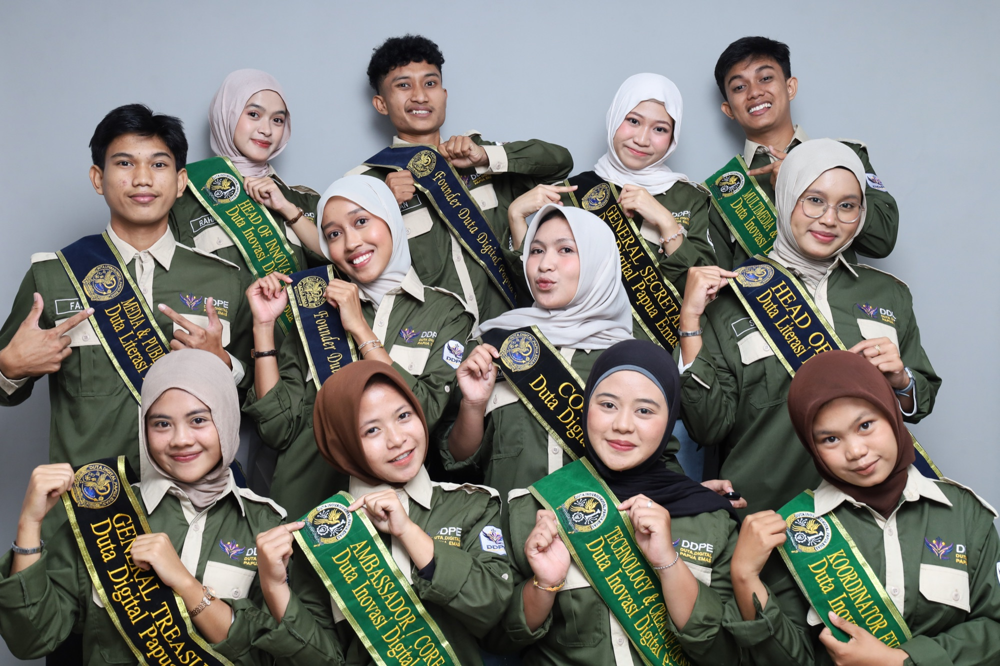
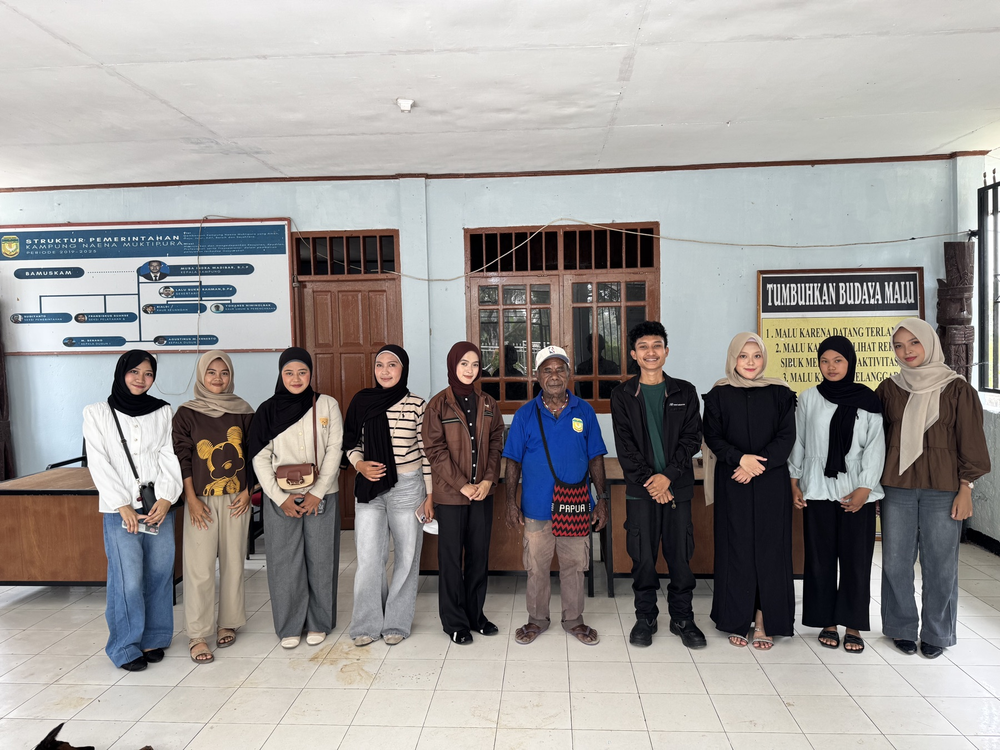
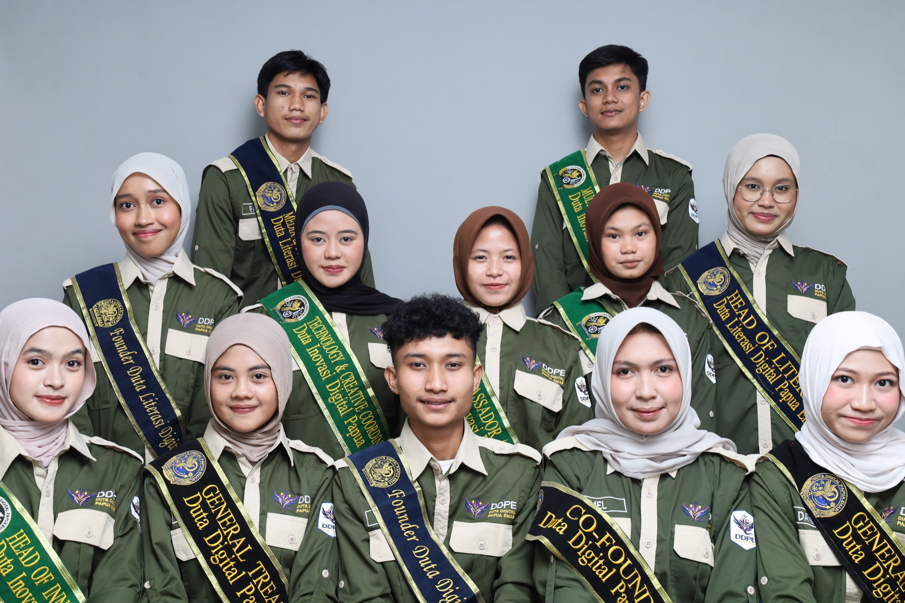
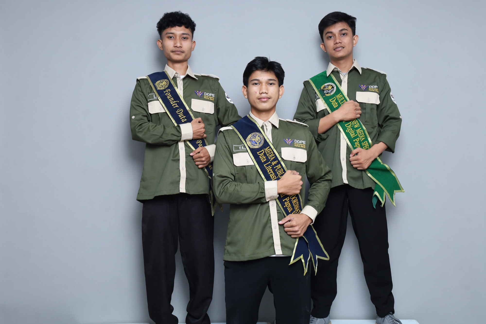
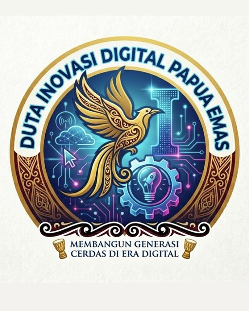
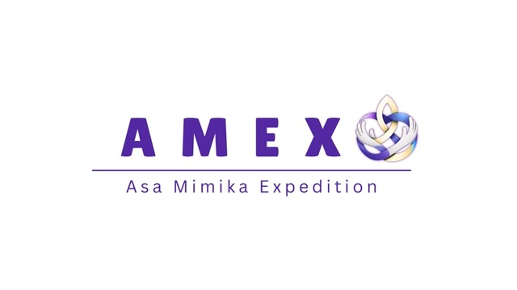
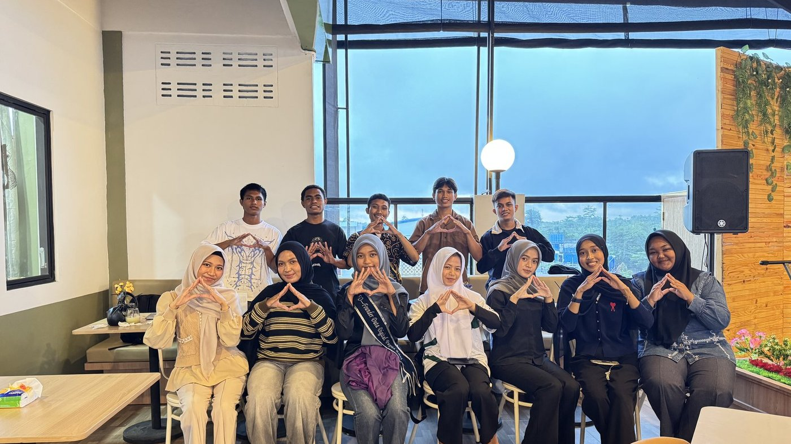

DLDPE
Duta Literasi Digital Papua Emas
Membangun kecakapan untuk menggunakan teknologi secara kritis, aman, dan bertanggung jawab.
- Mengenali informasi dan berpikir kritis
- Menjaga privasi dan keamanan digital
- Membangun etika serta budaya digital
Navigation is available in English. Page content remains in Indonesian until an official translation is available.
Unit Khusus Papua · Karsa Muda Indonesia
Ruang belajar, berkarya, dan berkolaborasi bagi pemuda melalui teknologi digital. Menghubungkan literasi dan inovasi yang berangkat dari kebutuhan masyarakat.




DDPE dalam angka
Jalur bergabung
Setiap jalur punya fokus dan cara bergabung sendiri. Mulai dari yang paling dekat dengan minatmu.
DLDPE — belajar berpikir kritis, menjaga keamanan digital, dan membagikannya ke sekitar.
02
DIDPE — mengubah ide menjadi gagasan dan karya yang menjawab kebutuhan lokal.
03AMEX dan DDPE Volunteer — belajar bersama dan mengabdi langsung di lapangan.
04Untuk organisasi dan komunitas yang ingin bekerja sama dengan DDPE.
Dua pilar utama
Dua ruang tumbuh yang saling melengkapi: kecakapan digital dan keberanian mengembangkan gagasan.
DLDPE
Membangun kecakapan untuk menggunakan teknologi secara kritis, aman, dan bertanggung jawab.

DIDPE
Mengubah rasa ingin tahu menjadi gagasan dan karya yang relevan dengan kebutuhan masyarakat.
Ruang Kerja DDPE
Semua urusan organisasi dalam satu tempat, dari program kerja sampai laporan akhir masa jabatan, dibantu DDPE AI, kecerdasan buatan yang dikembangkan DDPE untuk menyusun surat, notulen, laporan, RAB, dan materi kelas. Hanya anggota yang sudah resmi tercatat yang dapat membuka modul kerja.
Belum punya akun? Lihat siapa yang bisa masuk dan apa yang akan Anda lihat.
Alur bergabung
Calon pendaftar bisa mulai dari akun sendiri dan memantau prosesnya sampai pengurus menyelesaikan verifikasi.
Daftar dengan email aktif dan masuk ke dasbor calon yang berisi pengumuman dan informasi pendaftaran.
Pilih jalur DLDPE, DIDPE, atau AMEX, lalu lengkapi formulir saat periode rekrutmen dibuka.
Pengurus memeriksa pendaftaran dan memberi kabar hasilnya. Selama proses ini, dasbor tetap berupa ruang calon.
Jika lolos, akunmu diaktifkan penuh: ID anggota, kartu anggota, dan seluruh modul Ruang Kerja.
Program & agenda
Agenda terdekat
 Program unggulan · AMEX
Program unggulan · AMEX

Belajar bersama dan mengabdi melalui program yang berangkat dari konteks masyarakat. Edisi 14–15 November 2026.
Jelajahi AMEXDDPE Volunteer
Temukan ruang kontribusi sesuai minat, waktu, dan kebutuhan program.
Kenali Jalur RelawanMitra & kolaborasi
Hubungkan ide, keahlian, dan dukungan organisasi Anda dengan program DDPE.
Mulai Kolaborasi
Arah kami
Terwujudnya generasi muda Papua yang berdaya, cakap digital, dan berintegritas untuk berkontribusi bagi kemajuan masyarakat menuju Indonesia Emas 2045.
Visi Duta Digital Papua Emas
Bagian dari gerakan nasional
Karsa Muda Indonesia (KAMI) adalah gerakan pemuda lintas bidang yang lahir di Tanah Papua dan kini bergerak di berbagai regional Indonesia. Pergerakan KAMI di Papua dijalankan oleh Duta Digital Papua Emas, yang memiliki struktur kepengurusan, program, pendaftaran, dan ruang kerja sendiri di ddpe.my.id.
Memuat agenda…
Galeri
Ketuk foto untuk memperbesar.
Kabar dari DDPE
Pertanyaan umum
Ekosistem DDPE
Mulai dari satu langkah: daftar, masuk, atau berkolaborasi.